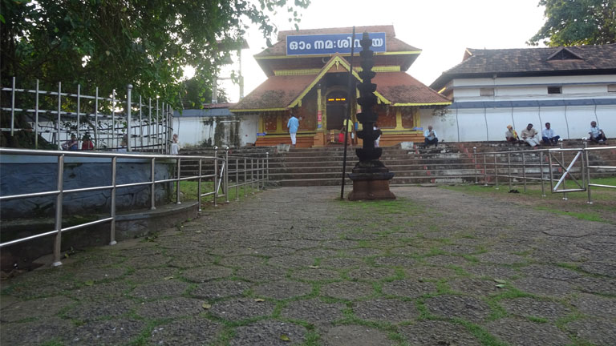
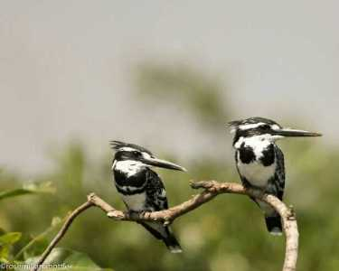
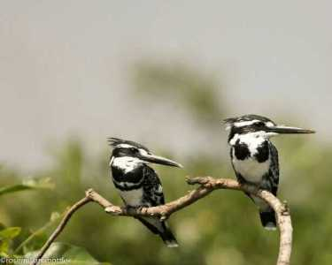
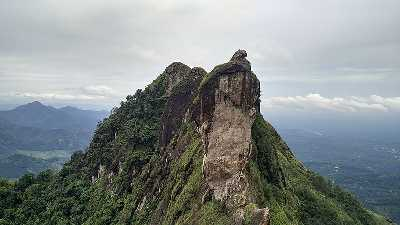
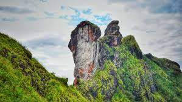
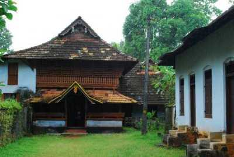
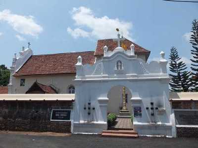
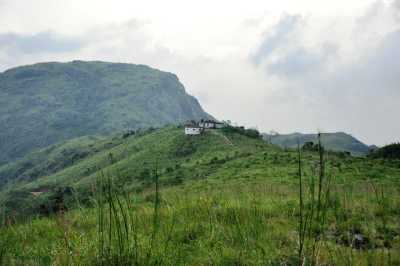
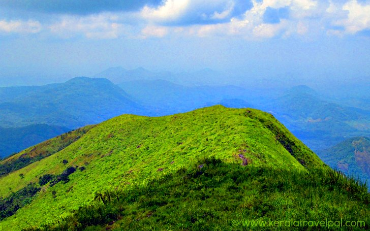

Kottayam is a city in the Indian state of Kerala.It is located in central Kerala and is also the administrative capital of Kottayam district.Bordered by the lofty and mighty Western Ghats on the east and the Vembanad Lake and paddy fields of Kuttanad on the west, Kottayam is a land of unique characteristics.Panoramic backwater stretches, lush paddy fields, highlands, hills and hillocks, extensive rubber plantations, places associated with many legends and a totally literate people have given Kottayam District the enviable title:The land of letters, legends, latex and lakes. The city is an important trading center of spices and commercial crops, especially rubber. Most of India’s natural rubber originates from the acres of well-kept plantations of Kottayam, also home to the Rubber Board.Kottayam is also called as “Akshara Nagari” which means the “city of letters” considering its contribution to print media and literature.
KOTTAYAM
TOURIST PLACES
Thirunakkara Mahadev Temple

A popular Hindu shrine and great epitome of Kerala style of architecture, Thirunakkara Mahadev Temple is dedicated to Lord Shiva. The temple was established in 16th century by the king of Thekkumkur.
Click here for moreKumarakom Bird Sanctuary
 

The Kumarakom Bird Sanctuary, also popularly known as the Vembanad Bird Sanctuary, is a breathtaking and beautiful bird sanctuary that is located at Kumarakom in the Kottayam district in the Indian state of Kerala.
Click here for moreIllikkal Kallu
 Located at a height of 6000 ft above the sea level in the Western Ghats of Kottayam, Kerala, Illikkal Kallu is a major tourist attraction and one of the most pristine spots in all of India. Situated in Moonnilavu Village, Meenachil taluk, the nearest city to the summit is Teekoy. Besides several other factors which make this peak unique, the most prominent feature is that half the boulder of the majestic rock has fallen apart.
Click here for morePoonjar Palace
A huge majestic palace bounded by a boundary of massive walls is Poonjar Palace situated in Meenachil Taluka. The palace is adorned with a fascinating collection of various type of furniture and antiques which includes grand chandeliers, jewelry boxes, statues, grain measurer, weapons and palm leaf engravings.
Click here for moreSt. Mary's Orthodox Church
A significant center of Syrian Christians of Kerala, St. Mary's Orthodox Church was originally a Malankara Orthodox Church. Located about 4 km from the Kottayam in Cheriyapalli, the structure was established by king of Tekkemur in 1579.
Click here for moreElaveezha Poonchira
 Located at a distance of 15 kms from Thodupuzha and 60 kms from Kottayam, Elaveezha Poonchira is a small quaint hill station. Perched at a height of 3200 feet above the sea level, it can be reached by a jeep ride through the unpaved rocky mountainous terrain. Literally translating to a ‘flowery lake where no leaves fall’, the place has acres of barren land without any plantation or trees with a perennial lake ‘Poonchira’. The area receives heavy rainfall, and the entire valley turns into a river during monsoons.
Click here for more